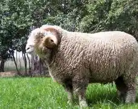
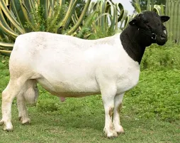
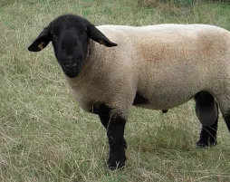
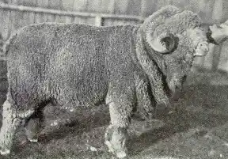
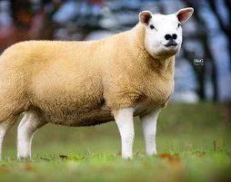

Merino
Conocido por su lana fina y suave de alta calidad.
Excelente para la produccion de textiles.
$120 USD

Dorper
Raza de carne resistente y de bajo mantenimiento.
Adaptable a climas diversos.
$150 USD

Suffolk
Raza de carne popular con crecimiento rapido.
Produce canales de alta calidad.
$140 USD

Rambouillet
Doble proposito, buena produccion de lana y carne.
Adaptable a diferentes sistemas de manejo.
$130 USD

Texel
Raza de carne magra con excelente conformacion muscular.
Muy eficiente en la conversion de alimento.
$160 USD